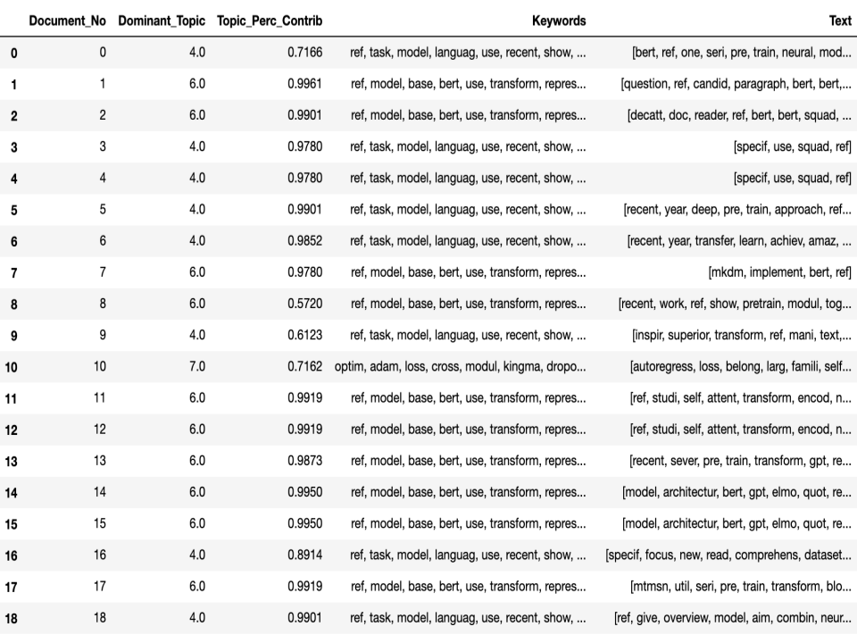
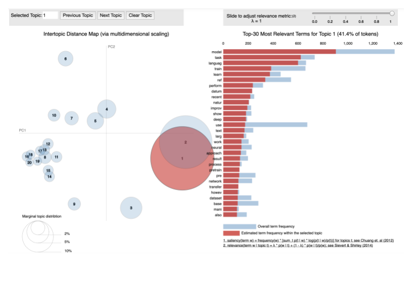
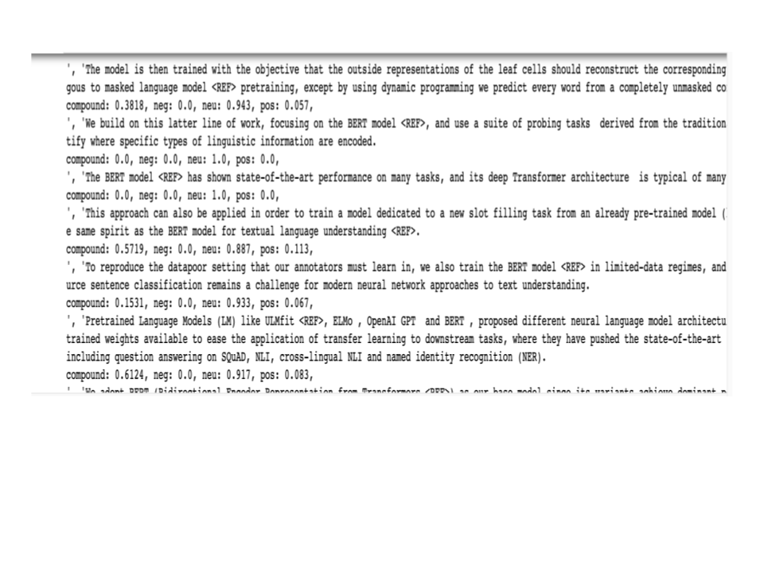

Dive into ocean of research content using the Citation Analysis API
LDA Analysis goes here to produce LDA topics and key words returned by giving a query for scientific paper
Interactive topic model visualization to help users interpret the topics in a topic model that has been fit to a corpus of text data.
The information is extracted from a fitted LDA topic model to inform an interactive web-based visualization.
Visualises the LDA topics to make inference
The polirity of citation for searched paper is returned here. Sentiment analysis can shed light on the emotions expressed when discussing a given topic.
We have imported tools for the NLTK: the VADER lexicon, which calculates negative, positive, and neutral values for our text,
and a word tokenizer, which splits our large text file into sentences or words.
Finally the summary of the topics will be generated from the original text of dominant topics for the searched paper.